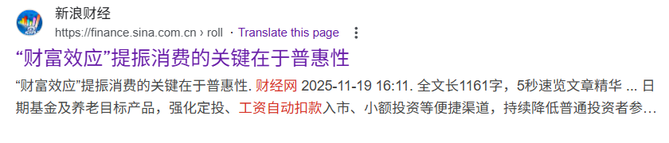
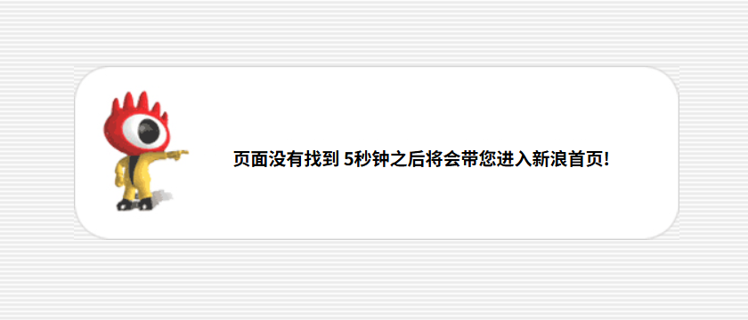

一切都是税（持续更新）¶
政府的唯一收入就是税，当政府计划增加税收时，除了直接进行税制改革加税，更多是通过隐性方式加税，因为直接加税通常会引起纳税人的抗议，对社会治安稳定性不利。
以下收录各种典型的与税有关的事件，持续更新。
释永信事件
少林寺商业化¶
释永信对少林寺的商业化经营和推广，引起了部分争议。他也因此被称为“少林 CEO”、“政治和尚”、“经济和尚”。但他认为：“我们不是为了经济收入，少林寺的门票收入已经完全足够僧人的开销，我们是为了光大佛教事业。”2006 年，因对登封旅游事业做出突出贡献，释永信获得当地政府赠送的价值 100 多万元的大众越野车。2009 年 11 月，少林寺官网遭遇黑客攻击，并贴出伪造的释永信对少林寺商业化悔过书。
涉嫌犯罪¶
2015 年 7 月 26 日，网络上出现一个名为《少林寺方丈释永信这只大老虎，谁来监督》的举报贴。该帖子的作者“释正义”自称是一名少林寺弟子。他在帖子中举报释永信，称其有双重户籍，强奸尼僧释延果，包养数名情妇，与哈尔滨女子关丽丽、尼僧释延洁（俗名：韩明君）各有一名私生女，并出具相关证据。30 日，29 名少林寺弟子在网络上发表声明，指称“释正义”为被释永信逐出少林寺的原武僧总教头释延鲁，并谴责其“欺师灭祖”的行为。对此释延鲁否认，少林寺方面声称不清楚此人是否是释延鲁。释永信原定要在 8 月 2 日率团赴泰国曼谷参加少林功夫表演，但受到登封市宗教局的调查而未出国，由少林寺首座释永福临时带团。登封市公安局少林派出所的副所长来到少林寺中询问释永信并做了三页笔录。8 月 8 日，释延鲁带领释永信前法律顾问王永华等少林寺相关人士，在北京向国家宗教局实名举报释永信，举报内容与先前的“释正义”相似。8 月 25 日，国家宗教局透露，针对释永信的举报材料，已转送河南省宗教局了解核实。2015 年 11 月，河南调查组公布了调查初步结果：释永信没有私生子女，方丈资格的获得“程序如法合规”；被举报的经济和其他问题，正在依法依规调查中。
正式被查¶
释永信于 2025 年 2 月访问梵蒂冈与时任教宗方济各会面，回国后旋即被限制出境；同年 5 月郑州市和登封市的宗教局、统战部派员进驻少林寺调查。其后甚至传出其携带 7 名情人、21 名子女、6 名寺院工作人员共 38 人企图潜逃美国，但于上海浦东机场遭拦截的谣言，更导致开封警方出面辟谣。
2025 年 7 月 27 日，少林寺管理处官方通报，释永信涉嫌刑事犯罪，挪用侵占项目资金寺院资产；严重违反佛教戒律，长期与多名女性保持不正当关系并育有私生子。目前正在接受多部门联合调查。有关情况将及时向社会公布。消息指释永信于 7 月 25 日深夜被“叫走”。
7 月 28 日，中国佛教协会发布公告表示，释永信的所作所为性质十分恶劣，严重败坏了佛教界的声誉，损害了出家人的形象，该会坚决拥护和支持对释永信的依法处理决定。日前，该会收到河南省佛教协会报来《关于注销释永信戒牒的报告》。根据有关规定，中国佛教协会同意对释永信的戒牒予以注销。
7 月 29 日，释永信的少林寺住持职务由洛阳白马寺住持释印乐接替。
source: wikipedia
地方税收压力¶
中国大陆官方查处释永信给出的理由，和多年前的争议理由并没有差别，可以合理推断官方一直在纵容他的违法犯罪行为。现在才进行查处应该主要是，全国各地都在想方设法增加税收进行化解债务，宗教场所的现金流非常稳健，且随着经济持续下行导致的社会信教思潮，宗教场所的利润屡创新高，因此地方政府必须拿下这部分资金用以补充税收。至于释永信的私人生活，可以看出官方并不过多干涉，理论上脍炙人口的“少林寺”只是少林文化旅游有限公司，由中旅集团下属中旅发展公司为主要控股的商业实体，是借宗教进行商业盈利实体。
加强监管社保强制缴纳与资本利得税
加强监管社保强制缴纳，延缓社保结余资金亏空¶
最高人民法院召开新闻发布会，发布《最高人民法院关于审理劳动争议案件适用法律问题的解释(二)》，针对社会广泛关注的热点争议问题，统一法律适用标准，切实维护劳动者合法权益，解释自 9 月 1 日起施行。依法参加社会保险是用人单位和劳动者的法定义务。针对实践中存在的用人单位规避社保缴纳、劳动者主动放弃社保等问题，司法解释作出明确规定:无论双方协商还是劳动者单方承诺，任何“不缴社保”的约定都是无效的。最高人民法院民一庭法官张艳介绍，比如用人单位为了降低用工成本，比如有的劳动者为了多拿工资，要求用人单位把社会保险费以补助的方式发放给个人，两种情况都存在。本次司法解释就明确规定了用人单位和劳动者约定不缴纳社会保险，或者劳动者单方承诺不缴纳社会保险都是无效的。
加强个人境外资本利得税收监管¶
《金融时报》刊文，据了解，近期有纳税人收到了税务部门通知，告知其需要依法办理境外所得申报并缴纳相应税款。“根据我国个人所得税法，个人股票交易所得属于财产转让所得，应当适用 20% 的税率按次征收。其中，个人在境内二级市场的股票交易所得暂免征收个人所得税;在境外直接进行股票交易所得没有免税规定，需要在取得所得的次年申报纳税。吉林财经大学税务学院院长张巍解释说。为了更加合理的征收，我国税务部门在征管时，允许纳税人按照纳税年度盈亏相抵，但不允许跨年互抵。依法纳税是每个公民应尽的义务。个人未申报或者未如实申报境外所得，除了会被税务机关要求补缴税款外，还会被加收滞纳金，情形严重的还可能被稽查部门立案检查，将面临税务处罚。纳税人如果发现自己此前申报个税时，存在少报、漏报境外所得的，要及时补正。（金融时报）
恢复债券利息收入的增值税¶
财政部、税务总局公布国债等债券利息收入增值税政策的公告。自 2025 年 8 月 8 日起，对在该日期之后(含当日)新发行的国债、地方政府债券、金融债券的利息收入，恢复征收增值税。对在该日期之前已发行的国债、地方政府债券、金融债券（包含在 2025 年 8 月 8 日之后续发行的部分）的利息收入，继续免征增值税直至债券到期。
鼓励民企参与基础设施、重大技术公关等项目
2025 年 11 月 10 日，新华社报道，中国发布《关于进一步促进民间投资发展的若干措施》，提出 13 项针对性政策措施，其中包括加大中央预算内投资、新型政策性金融工具等对符合条件民间投资项目的支持力度。
- 对需报国家审批（核准）的具有一定收益的铁路、核电等重点领域项目，鼓励支持民间资本参与并明确持股比例等要求。
- 对各地方规模较小、具有盈利空间的城市基础设施领域新建项目，鼓励民间资本参与建设运营。
- 引导民间资本有序参与低空经济、商业航天等领域建设。
- 积极支持有能力的民营企业牵头承担国家重大技术攻关任务。
- 清理不合理的服务业经营主题准入限制；坚决取消招标投标领域对民营企业单独设置的不合理要求；并进一步加大政府采购支持中小企业力度。
- 银行业金融机构应制定民营企业年度服务目标，满足民营企业合理信贷需求。
- 积极支持更多符合条件的民间投资项目发行基础设施领域不动产投资信托基金（REITS）。
本应是政府部门使用税收收入开展的项目，现在基本都开放给了私营部门，说明当前政府的税收状况确实是捉襟见肘。各地方政府也都有过坑骗私营企业投资后直接通过暴力抢夺投资成果的恶劣事迹，因此这也是中国大陆政府部门-私营部门畸形互动关系的体现。
大陆版 401k 还是加税？
2025 年 11 月 19 日，财经网刊文《“财富效应”提振消费的关键在于普惠性》，截至 11 月 20 日，该报道已经没有大陆官方新闻媒体渠道可以查看，通过搜索只能查看到部分预览内容。


文章中提出“工资自动扣款入市”，究竟是效仿美国 401k 等计划让投资者切实在权益市场受惠，还是变相征税，只需要审视沪深市场是以回购分红为主导，还是融资为主导的市场即可。